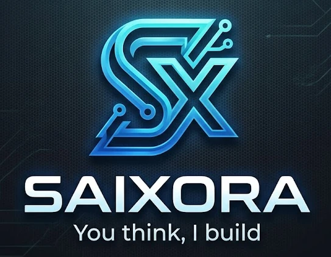

Websites & digital experiences
Landing pages, brand websites, interactive storytelling and responsive interfaces that feel considered on every screen.
Discuss a project ↗INDEPENDENT TECHNOLOGY STUDIO / EST. 2026
Big idea? Complicated problem? An experience that doesn't exist yet? SAIXORA builds digital experiences and software around real needs.
 IDEA → IMPACT
IDEA → IMPACTSAIXORA stands for Smart, Artificial Intelligence, Optimization, Research & Automation. It's a student-founded technology initiative built on curiosity, engineering and the drive to solve real problems.
From expressive websites to purpose-built software, we start by understanding the challenge—then design a solution that fits.
Tell us what you're imagining
Smart · Artificial Intelligence · Optimization · Research · Automation
Ideas deserve to become real.We explore the right approach for each challenge. Scope and technical feasibility are discussed before any commitment.
Landing pages, brand websites, interactive storytelling and responsive interfaces that feel considered on every screen.
Discuss a project ↗Purpose-built workflows, dashboards, tools and application concepts designed around the people who use them.
Discuss a project ↗Practical automation and intelligent features, thoughtfully scoped around privacy, reliability, and human oversight.
Discuss a project ↗Data structures, algorithms and thoughtful engineering used where they can make a system more reliable and useful.
Discuss a project ↗Products and design directions shaped around different needs. Concept artwork is clearly identified below.
A classroom technology system focused on Windows computer access, teacher sessions, and authorized administrative visibility.
PRODUCT DEVELOPMENTEDUCATION TECHNOLOGY ILLUSTRATIVE INTERFACE
ILLUSTRATIVE INTERFACE


The interface images above are AI-generated concept visuals used to communicate a design direction. They are not screenshots of commissioned client work or evidence that depicted features are available.
“I'm a student today, but I don't believe meaningful ideas have to wait until graduation.”
I'm Md Remon Islam, the founder and developer behind SAIXORA. Learning through real projects has shown me how much can change when curiosity meets code. I founded SAIXORA to turn useful ideas into thoughtful software—and to keep growing alongside every challenge.
My approach is simple: listen carefully, learn continuously, and build with purpose.
Every project begins with a conversation. A clear scope, practical milestones and honest communication come before the build.
Tell us the problem, the people involved and what success would look like.
We explore feasibility, requirements, timing and a clear proposal.
Design and development move through agreed milestones and reviews.
Test, gather feedback and agree on delivery and any ongoing support.
YOUR NEXT IDEA STARTS HERE
Describe it. Let's find out what's possible.
Tell SAIXORA about it YOU THINK, I BUILD. ✳